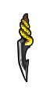
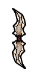

Daggers & Throwing Collection (Complete Assets)
Iron Hunting Knife[cite: 36]
Type: Dagger[cite: 36]
Power: 14 Attack[cite: 36]
Ability: Ultra-fast throwing blade ideal for rogues and agile classes[cite: 36].

Enhanced Steel Dirk[cite: 37]
Type: Elite / Pierce[cite: 37]
Power: 32 Attack[cite: 37]
Ability: Polished sharp steel blade with increased thrusting critical damage[cite: 37].
Heavy Butcher Cleaver[cite: 38]
Type: Heavy / Slash[cite: 38]
Power: 28 Attack[cite: 38]
Ability: Short cleaver capable of delivering brutal chopping wounds to close targets[cite: 38].
Curved Scimitar Knife[cite: 39]
Type: Curved / Slash[cite: 39]
Power: 30 Attack[cite: 39]
Ability: Swift curved blade designed for slicing through light armor[cite: 39].

Ninja Kunai Blade[cite: 40]
Type: Throwing / Ninja[cite: 40]
Power: 25 Attack[cite: 40]
Ability: Perfectly balanced throwing kunai for silent assassination[cite: 40].
Tainted Poison Stiletto[cite: 41]
Type: Poison / Stab[cite: 41]
Power: 36 Attack[cite: 41]
Ability: Coated with dripping green venom to weaken enemies over time[cite: 41].

Viper Fang Stalker[cite: 42]
Type: Venom / Elite[cite: 42]
Power: 42 Attack[cite: 42]
Ability: Wrapped with a golden serpent design, inflicting rapid toxic strikes[cite: 42].

Ring-Hilt Fighter Knife[cite: 43]
Type: Combat / Utility[cite: 43]
Power: 34 Attack[cite: 43]
Ability: Features a secure finger ring for rapid spinning combat tricks[cite: 43].

Golden Assassin Kunai[cite: 44]
Type: Elite / Throwing[cite: 44]
Power: 45 Attack[cite: 44]
Ability: Ornate golden dual-edge throwing knife with high armor-piercing stats[cite: 44].

Undead Skull Dagger[cite: 45]
Type: Dark / Necro[cite: 45]
Power: 48 Attack[cite: 45]
Ability: Embedded with a grinning skull crossguard that drains life force[cite: 45].
Goblin Poison Shiv[cite: 46]
Type: Poison / Rough[cite: 46]
Power: 38 Attack[cite: 46]
Ability: Notched crude blade optimized for sneaky backstab multipliers[cite: 46].
All-Seeing Blood Cleaver[cite: 47]
Type: Mystic / Blood[cite: 47]
Power: 50 Attack[cite: 47]
Ability: Blood-soaked blade embedded with a glowing magical rune eye[cite: 47].
Primitive Bone Knife[cite: 48]
Type: Bone / Ancient[cite: 48]
Power: 26 Attack[cite: 48]
Ability: Jagged blade carved directly from monster ribs and bound with hide[cite: 48].

Crimson Pawn Stiletto[cite: 49]
Type: Royal / Magic[cite: 49]
Power: 44 Attack[cite: 49]
Ability: Styled like a chess piece with a ruby core emitting fiery piercing thrusts[cite: 49].

Azure Pawn Stiletto[cite: 50]
Type: Royal / Arcane[cite: 50]
Power: 44 Attack[cite: 50]
Ability: Styled like a chess piece with an azure core emitting magical frost thrusts[cite: 50].

Eldritch Squid Dagger[cite: 51]
Type: Eldritch / Toxic[cite: 51]
Power: 52 Attack[cite: 51]
Ability: Infused with deep-sea tentacle horrors and toxic glowing slime[cite: 51].

Shadow Assassin Dart[cite: 52]
Type: Throwing / Dark[cite: 52]
Power: 35 Attack[cite: 52]
Ability: Aerodynamic dark throwing dart designed for silent long-range takedowns[cite: 52].

Double-Bladed Bone Scythe[cite: 53]
Type: Dual / Bone[cite: 53]
Power: 46 Attack[cite: 53]
Ability: Twin curved bone blades tied together for rapid spinning dual attacks[cite: 53].

Dual Venom Crescent[cite: 54]
Type: Dual / Poison[cite: 54]
Power: 54 Attack[cite: 54]
Ability: Glowing twin green crescent blades radiating lethal continuous poison[cite: 54].

Crystal Ice Shard[cite: 55]
Type: Ice / Crystal[cite: 55]
Power: 40 Attack[cite: 55]
Ability: Pure frozen ice dagger that chills enemies and slows their movement[cite: 55].
Viper Green Stinger[cite: 56]
Type: Poison / Assassin[cite: 56]
Power: 45 Attack[cite: 56]
Ability: Sleek curved dagger dripping with concentrated venomous acid[cite: 56].

Crimson Rogue Stiletto[cite: 57]
Type: Elite / Fire[cite: 57]
Power: 49 Attack[cite: 57]
Ability: Glowing red hot dagger optimized for high-speed critical stealth strikes[cite: 57].

Serpent Coiled Blade[cite: 58]
Type: Poison / Mystic[cite: 58]
Power: 51 Attack[cite: 58]
Ability: Intricate green snake wrapped around an enchanted emerald dagger[cite: 58].

Black Mamba Dual Fang
Type: Dark / Dual
Power: 58 Attack
Ability: Twin black serpent blades bound together, dealing instant toxic paralysis.

Gilded Treasure Dagger[cite: 59]
Type: Treasure / Elite[cite: 59]
Power: 60 Attack[cite: 59]
Ability: Ornate golden dagger embedded with precious emerald gemstones[cite: 59].

Dual Gilded Crescent[cite: 60]
Type: Treasure / Dual[cite: 60]
Power: 65 Attack[cite: 60]
Ability: Twin golden crescent blades linked by a central emerald ring[cite: 60].

Abyssal Hydro Dual Daggers[cite: 61]
Type: Water / Dual[cite: 61]
Power: 56 Attack[cite: 61]
Ability: Hooked deep-sea dark blades that manipulate swirling water currents[cite: 61].

Spring Blossom Mini Dagger[cite: 62]
Type: Event / Mystic[cite: 62]
Power: 38 Attack[cite: 62]
Ability: Enchanted pastel pink dagger radiating cheerful springtime magical energy[cite: 62].

Verdant Earth Shuriken[cite: 63]
Type: Nature / Shuriken[cite: 63]
Power: 42 Attack[cite: 63]
Ability: Four-bladed spinning green ninja star infused with sharp razor vines[cite: 63].
Blazing Fire Shuriken[cite: 64]
Type: Fire / Shuriken[cite: 64]
Power: 47 Attack[cite: 64]
Ability: Imbued with swirling flames that scorch targets upon impact[cite: 64].
Radiant Star Shuriken[cite: 65]
Type: Holy / Shuriken[cite: 65]
Power: 50 Attack[cite: 65]
Ability: Bright golden star blade emitting dazzling light to blind foes[cite: 65].

Glacial Ice Shuriken[cite: 66]
Type: Water / Shuriken[cite: 66]
Power: 46 Attack[cite: 66]
Ability: Crystallized water shuriken that creates freezing frost ripples on contact[cite: 66].